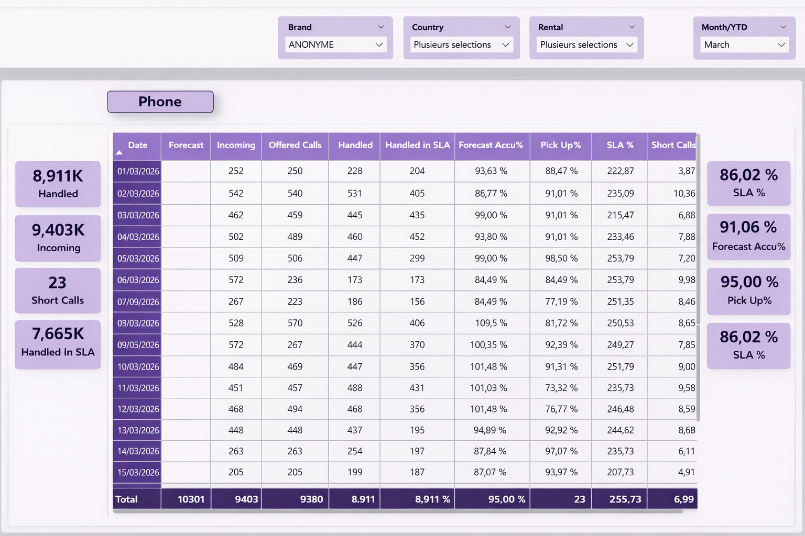
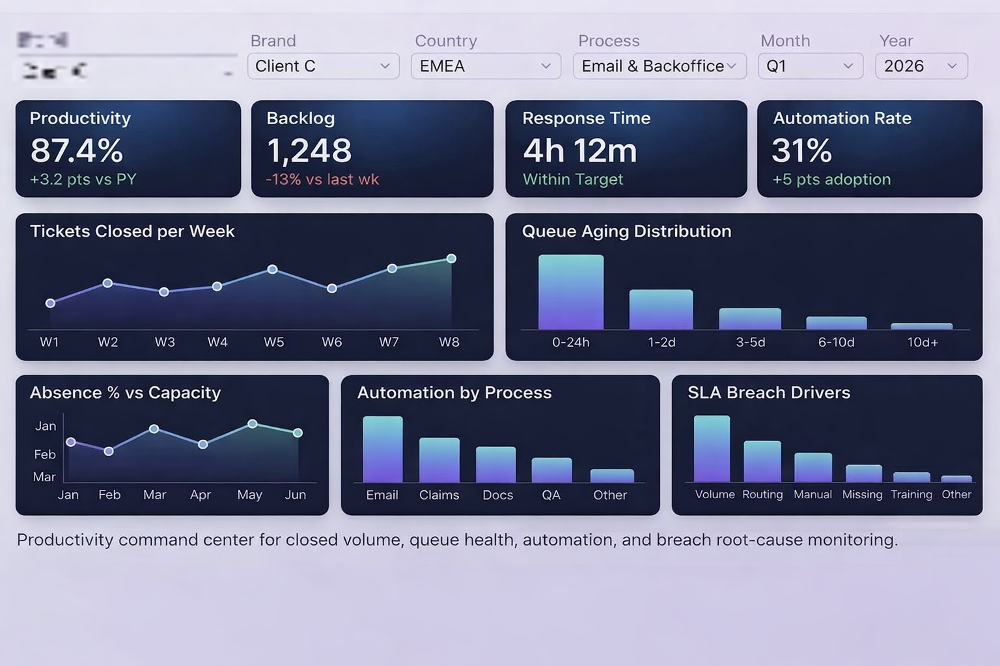

ÉTUDES DE CAS
Études de cas narratives avec problème, analyse, solution et impact mesurable
Chaque projet est présenté comme une mission de consulting afin de rendre visible le raisonnement : ce qui ne fonctionnait pas, comment l’analyse a été menée, ce qui a été redéfini, et ce qui a changé avant/après.
Cas 01 · Opérations
Cockpit de performance multi-pays
Le problème
Les équipes utilisaient des fichiers fragmentés et des exports manuels, sans vision globale des indicateurs de performance.
Analyse
Cartographie de la chaîne KPI et identification des incohérences afin de clarifier les indicateurs décisionnels.
Définition
Conception d’un dashboard structuré avec hiérarchie KPI claire et source unique de vérité.
Solution
Création d’un cockpit opérationnel centralisant volume, SLA et performance dans une logique visuelle claire.
Cas 02 · Reporting exécutif
Simplification du pilotage KPI exécutif
Le problème
Les dashboards contenaient les bonnes données mais pas une lecture adaptée aux dirigeants.
Analyse
Étude de la manière dont les décideurs consomment l’information en réunion.
Définition
Structure top-down orientée prise de décision.
Solution
Dashboard exécutif clair facilitant la lecture et les décisions.
GALERIE DE DASHBOARDS
Dashboards reconstruits à partir de rapports réels peu structurés
Conçus pour améliorer la lisibilité et la prise de décision (anonymisés).




CONTACT
Disponible pour des postes BI / Data
Email : yusf.hammouch@gmail.com
Tél : +212 632 910 265
Rabat, Maroc